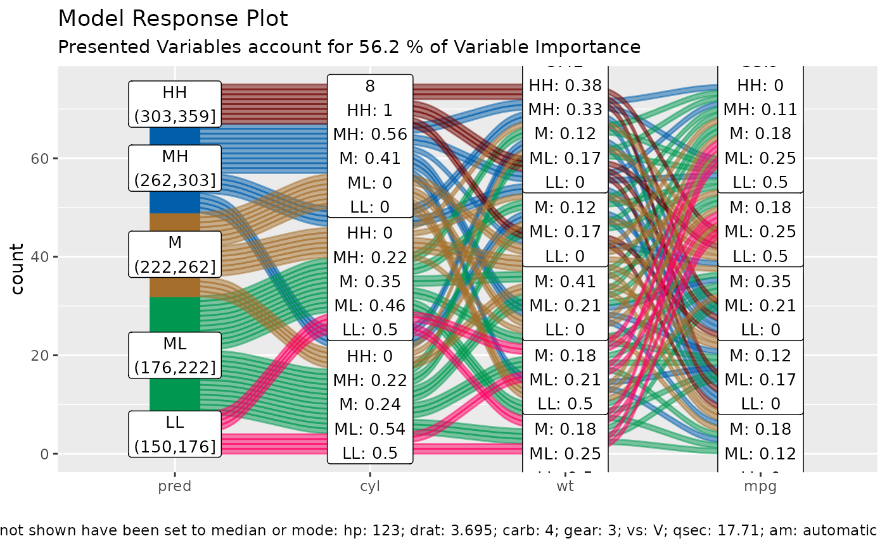

create model response plot for caret models
Source:R/alluvial_model_response.R
alluvial_model_response_caret.RdWraps alluvial_model_response and
get_data_space into one call for caret models.
Usage
alluvial_model_response_caret(
train,
data_input,
degree = 4,
bins = 5,
bin_labels = c("LL", "ML", "M", "MH", "HH"),
col_vector_flow = c("#FF0065", "#009850", "#A56F2B", "#005EAA", "#710500", "#7B5380",
"#9DD1D1"),
method = "median",
parallel = FALSE,
params_bin_numeric_pred = list(bins = 5),
pred_train = NULL,
stratum_label_size = 3.5,
force = F,
resp_var = NULL,
...
)Arguments
- train
caret train object
- data_input
dataframe, input data
- degree
integer, number of top important variables to select. For plotting more than 4 will result in two many flows and the alluvial plot will not be very readable, Default: 4
- bins
integer, number of bins for numeric variables, increasing this number might result in too many flows, Default: 5
- bin_labels
labels for the bins from low to high, Default: c("LL", "ML", "M", "MH", "HH")
- col_vector_flow,
character vector, defines flow colours, Default: c('#FF0065','#009850', '#A56F2B', '#005EAA', '#710500')
- method,
character vector, one of c('median', 'pdp')
- median
sets variables that are not displayed to median mode, use with regular predictions
- pdp
partial dependency plot method, for each observation in the training data the displayed variables are set to the indicated values. The predict function is called for each modified observation and the result is averaged
. Default: 'median'
- parallel
logical, turn on parallel processing for pdp method. Default: FALSE
- params_bin_numeric_pred
list, additional parameters passed to
manip_bin_numericswhich is applied to the pred parameter. Default: list(bins = 5, center = T, transform = T, scale = T)- pred_train
numeric vector, base the automated binning of the pred vector on the distribution of the training predictions. This is useful if marginal histograms are added to the plot later. Default = NULL
- stratum_label_size
numeric, Default: 3.5
- force
logical, force plotting of over 1500 flows, Default: FALSE
- resp_var
character, sometimes target variable cannot be inferred and needs to be passed. Default NULL
- ...
additional parameters passed to
alluvial_wide
Details
this model visualisation approach follows the "visualising the model in the dataspace" principle as described in Wickham H, Cook D, Hofmann H (2015) Visualizing statistical models: Removing the blindfold. Statistical Analysis and Data Mining 8(4) <doi:10.1002/sam.11271>
Parallel Processing
We are using `furrr` and the `future` package to paralelize some of the computational steps for calculating the predictions. It is up to the user to register a compatible backend (see plan).
Examples
if(check_pkg_installed("caret", raise_error = FALSE)) {
df = mtcars2[, ! names(mtcars2) %in% 'ids' ]
train = caret::train( disp ~ .,
df,
method = 'rf',
trControl = caret::trainControl( method = 'none' ),
importance = TRUE )
alluvial_model_response_caret(train, df, degree = 3)
}

# partial dependency plotting method
if (FALSE) { # \dontrun{
future::plan("multisession")
alluvial_model_response_caret(train, df, degree = 3, method = 'pdp', parallel = TRUE)
} # }